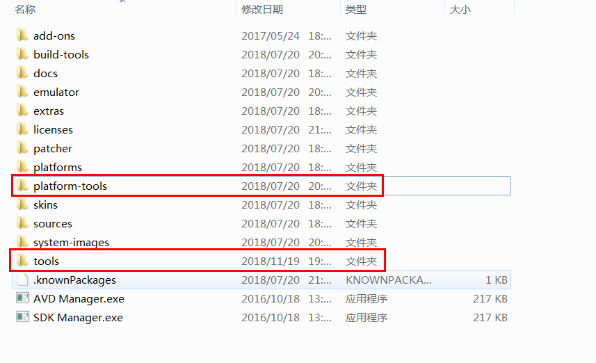
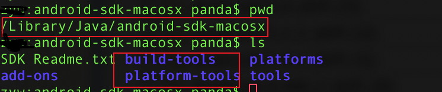
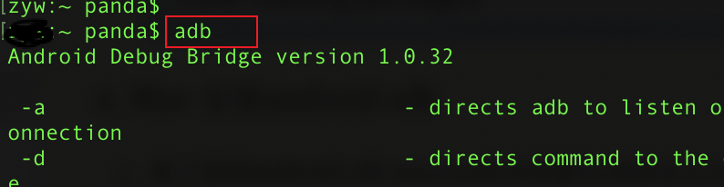

1. Window 安装sdk(Androi需要的环境)
安装步骤:
1.1 解压Android sdk 文件夹
注意:路径中不要有中文, 确保文件夹下有一下两个文件
如下图: 
1.2 配置到系统环境变量下.
SDK环境变量配置(Windowns7为例)
1.进入我的电脑 -> 属性 -> 高级系统设置 -> 环境变量
2.在系统变量下点击新建 -> 变量名: ANDROID_HOME -> 变量值: D:\android-sdk -> 点击确定按钮
3.在系统变量下找到系统的path变量，最后添加：;%ANDROID_HOME%\platform-tools;%ANDROID_HOME%\tools;(最前面是一个分号，如果path变量最后已有分号，可不用添加) -> 点击确定按钮
1.3 验证环境变量是否配置成功
- 在dos中输入adb指令,如下图配置成功

- 在dos中输入android指令 出现Android sdk manager对话框

注意:**
假如sdk中已经有build-tools和platform-tools文件夹,就不需要再进行下载安装了
2. Mac 安装android sdk
把下载的android sdk macosx版本的解压到指定目录(我的解压到//Library/Java/)

注意:
假如sdk没有build-tools和platform-tools文件夹,要把提供的文件夹移动到此处, 后面只需要配置环境变量即可,不需要下载了
把sdk配置到系统环境变量
1.进入命令行， vim ~/.bash_profile 2.# set android ANDROID_HOME=电脑存放的路径/android-sdk-macosx PATH=$PATH:$ANDROID_HOME/tools:$ANDROID_HOME/platform-tools export ANDROID_HOME export PATH
验证是否成功
验证adb命令: 在终端输入adb,出现adb版本信息说明成功

验证android是否配置成功: 在终端输入android, 出现此图片说明成功

3、选择不同版本的的Android系统进行下载
注意:
由于安卓镜像在国外,最好更换国内的镜像
步骤
在弹出的android sdk manager页面,点击tools, 下啦框点击options

在弹出的对话框输入国内惊现的地址和端口号.

镜像地址列表(也可以网上查找最新的)：
中国科学院开源协会镜像站地址:
IPV4/IPV6: mirrors.opencas.cn 端口：80
IPV4/IPV6: mirrors.opencas.org 端口：80
IPV4/IPV6: mirrors.opencas.ac.cn 端口：80
上海GDG镜像服务器地址:
sdk.gdgshanghai.com 端口：8000
北京化工大学镜像服务器地址:
IPv4: ubuntu.buct.edu.cn/ 端口：80
IPv4: ubuntu.buct.cn/ 端口：80
IPv6: ubuntu.buct6.edu.cn/ 端口：80
大连东软信息学院镜像服务器地址:
mirrors.neusoft.edu.cn 端口：80